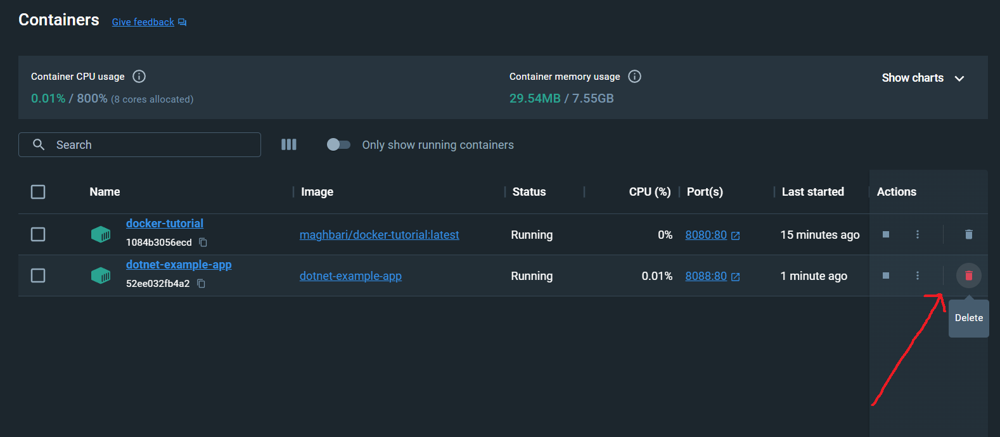
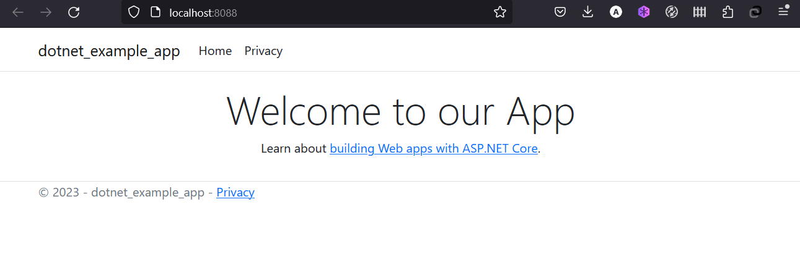

Now we've been asked by the product team to change the welcome message in our app dotnet-example-app
into Welcome to our App
Updating our Source Code¶
-
In the
Pages/Index.cshtmlfile, update line 8 to use the new empty text.diff - <h1 class="display-4">Welcome</h1> + <h1 class="display-4">Welcome to our App</h1> -
Let's build our updated version of the image, using the same command we used before.
bash docker build -t dotnet-example-app . -
Let's start a new container using the updated code.
bash docker run --name=dotnet-example-app -d -p 8088:80 dotnet-example-app
Uh oh! You probably saw an error like this (the IDs will be different):
docker: Error response from daemon: driver failed programming external connectivity on endpoint dotnet-example-app-updated (7ec2aa11290d7c766dba45c3ab46aaa143fd05ceb4c34b57bd24150fafec8d93): Bind for 0.0.0.0:8088 failed: port is already allocated.
So, what happened? We aren't able to start the new container because our old container is still running. The reason this is a problem is because that container is using the host's port 8088 and only one process on the machine (containers included) can listen to a specific port. To fix this, we need to remove the old container.
Replacing our Old Container¶
To remove a container, it first needs to be stopped. Once it has stopped, it can be removed. We have two ways that we can remove the old container. Feel free to choose the path that you're most comfortable with.
Removing a container using the CLI¶
-
Get the ID of the container by using the
docker pscommand.bash docker ps -
Use the
docker stopcommand to stop the container.```bash
Swap out
with the ID from docker ps¶ docker stop
``` -
Once the container has stopped, you can remove it by using the
docker rmcommand.bash docker rm <the-container-id>
Pro tip
You can stop and remove a container in a single command by adding the "force" flag
to the docker rm command. For example: docker rm -f <the-container-id>
Removing a container using the Docker Dashboard¶
If you open the Docker dashboard, you can remove a container with two clicks! It's certainly much easier than having to look up the container ID and remove it.
-
With the dashboard opened, hover over the app container and you'll see a collection of action buttons appear on the right.
-
Click on the trash can icon to delete the container.
-
Confirm the removal and you're done!

Starting our updated app container¶
-
Now, start your updated app.
bash docker run --name=dotnet-example-app -d -p 8088:80 dotnet-example-app -
Refresh your browser on http://localhost:8088 and you should see your updated welcome text!

Next, we'll see how to share these images with others.